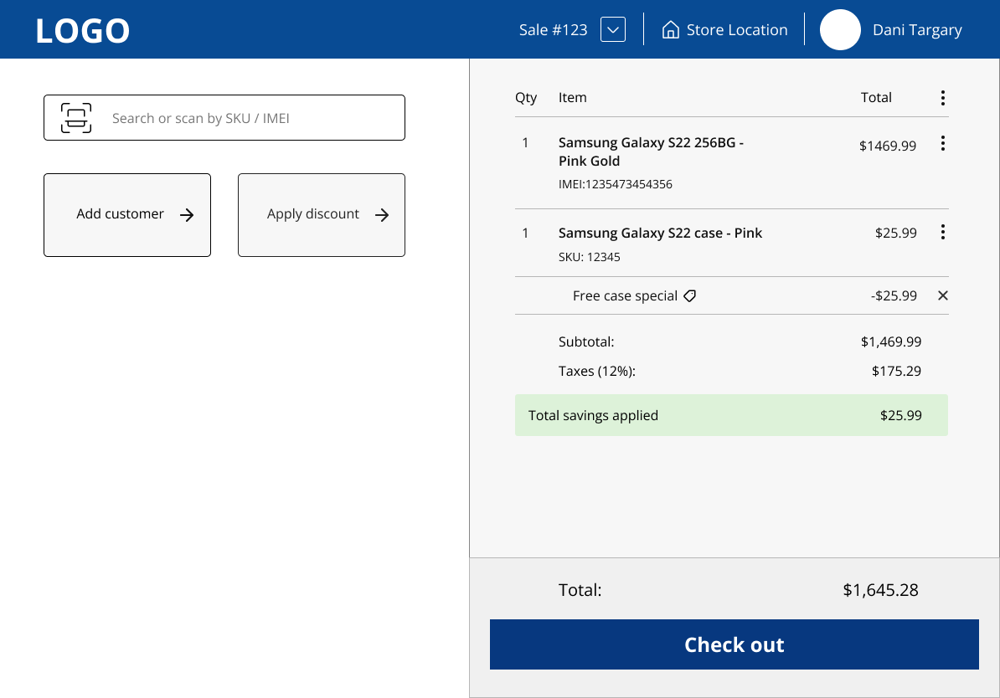

Reimagining the in-store retail experience, starting from the point-of-sale.

Lead product design, research, prototyping, and user testing
A modular point-of-sale for telecom retail, designed to work across devices and reduce the time it takes to complete an in-store transaction.